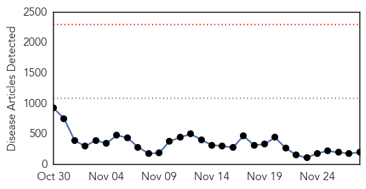
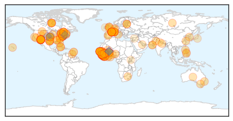
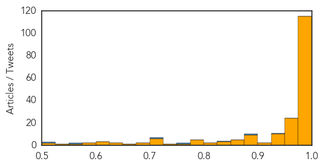

West Nile Virus
30-Day Web Trend
0 alerts, 0 warnings
30-Day Twitter Trend
0 alerts, 0 warnings

Article Locations

Article Confidences

Top Articles:
-
No articles found for Nov 28, 2014
Top Tweets:
-
No tweets found for Nov 28, 2014
Ebola
30-Day Web Trend
0 alerts, 0 warnings

30-Day Twitter Trend
0 alerts, 0 warnings
Article Locations
Article Confidences
Top Articles:
- 1.000
- Sierra Leone Will Soon Have More Ebola Infections Than Liberia
- 1.000
- Ebola Death Toll Reaches 5,689
- 1.000
- New Ebola death in SLeone dims optimism for epidemic's end
- 1.000
- WHO Says Male Ebola Survivors Should Abstain From Sex
- 1.000
- Ebola in Sierra Leone: Why is the nation lagging behind targets set to beat Ebola
- 1.000
- Perspective: The nation that got Ebola right
- 1.000
- Ebola survivors banned from sex
- 1.000
- Death Toll Reach Over 5600; First Case Revealed
- 1.000
- Ahwatukee man does not have Ebola, test shows
- 1.000
- Ebola Death Toll Reaches 5,689
- 1.000
- Is Pakistan Ready for Ebola? ‹ Newsweek Pakistan
- 1.000
- Japan to deliver humanitarian cargo to Ebola-hit Africa by Self-Defence Forces' aircraft
- 1.000
- Ebola: UN health agency advises male survivors to abstain from sex for 3 months (UN
- 1.000
- Epidemiological update: Outbreak of Ebola virus disease in West Africa (ECDC
- 0.999
- U.S. hospitals wary of caring for Ebola patients because of cost and stigma
- 0.999
- WHO advises male Ebola survivors to abstain from sex
- 0.999
- At 1 month, US Ebola monitors finding no cases
- 0.999
- Archives > News > Elk Grove’s state rep leads Ebola hearing
- 0.999
- NY doctor back from Guinea has Ebola, 1st in city
- 0.999
- Researchers Say Tests of Ebola Treatments, Vaccines Are Accelerating
- 0.999
- Health official: Sick Arizona man returned recently from West Africa tests negative for Ebola
- 0.999
- No Empathy For Africa
- 0.999
- WHO advises male Ebola survivors to abstain from sex
- 0.999
- Ebola cases near 16,000, Sierra Leone to overtake Liberia soon with most cases - WHO
- 0.998
- French President Hollande cheered in Ebola-stricken Guinea
- 0.998
- PAHO/WHO to provide training for doctors and nurses in the Caribbean and Latin America
- 0.998
- US Ebola Vaccine Passes First Test
- 0.998
- French President to visit Ebola-hit Guinea
- 0.998
- Ebola crisis: French President Hollande to visit Guinea
- 0.998
- Hunger stalks Ebola-hit countries: UN
- 0.998
- Canada sending military medics to Africa
- 0.998
- French president cheered in Ebola-stricken Guinea
- 0.998
- Estonia sends disinfectants to Sierra Leone to stop the spread of Ebola :: The Baltic Course
- 0.998
- Scientists trial rapid Ebola test in Guinea
- 0.998
- Estonia is sending disinfectants to Sierra Leone to stop the spread of Ebola - Sierra Leone
- 0.998
- At 1 month US Ebola monitors finding no cases
- 0.998
- Ebola: UN health agency advises male survivors to abstain from sex for 3 months
- 0.997
- Ebola racism
- 0.997
- Phoenix Ebola Scare Quickly Fizzles
- 0.997
- British-led scientists trial 15-minute Ebola test in Guinea
- 0.997
- County Health Department: Sierra Leone Traveler Tested Negative For Ebola
- 0.997
- Helen Scott: How Canada can help beat Ebola
- 0.997
- Canada to deploy military health staff to Sierra Leone in Ebola fight
- 0.997
- British-led scientists trial 15-minute Ebola test in Guinea
- 0.997
- WHO advises male Ebola survivors to abstain from sex
- 0.996
- French president cheered in Ebola-stricken Guinea
- 0.996
- Senegal reopens air, sea borders with Ebola-hit nations: report
- 0.996
- Ebola out of headlines but on the horizon (Opinion)
- 0.996
- Canada to deploy military health staff to Sierra Leone in Ebola fight
- 0.996
- Hollande first EU leader to visit Ebola-hit Guinea
Showing top 50 articles...
Top Tweets:
- 0.942
- Ebola virus in semen of men who have recovered from Ebola virus disease http://t.co/s5050KyrCA
- 0.887
- RT: There were 88 new confirmed cases of Ebola in S Leone yesterday (source: NERC)
- 0.838
- RT: 'In two studies Ebola virus was isolated from semen but subsequent infections were not identified in household contacts' say…
- 0.761
- RT: The Ebola virus isn't stopping: Sierra Leone to eclipse Liberia in Ebola cases http://t.co/Iehi6pZL3K http://t.co/3Qn5wIgy…
- 0.717
- RT: [REUTERS] Number of Ebola cases nears 16000 as Sierra Leone loses ground - WHO http://t.co/8gvfKKPHlW EBOLANEWS
- 0.569
- RT: Two children being tested for Ebola after arriving in the UK from Africa http://t.co/2cRI3QG9HI Ebola EbolaResponse
- 0.511
- Ebola outbreak: A 'last battle' to stop deadly disease as experts warn against complacency http://t.co/FzmYDJN8lq